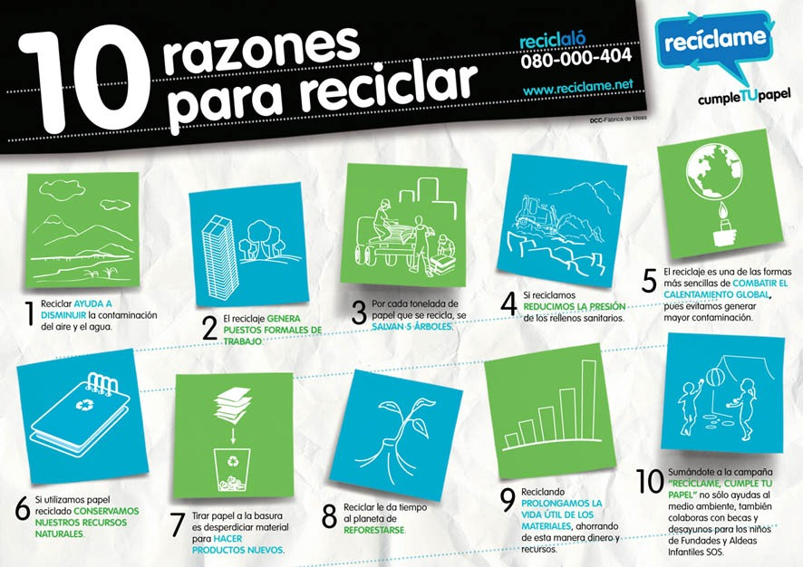

una vez terminados su ciclo de vida útil, se transforman de nuevo en nuevos materiales.
El reciclaje no sólo tiene sentido desde el punto de vista ambiental,
sino también desde el punto de vista económico.
Al reciclar estamos ahorrando materias primas y energía en su elaboración. Por ejemplo con el reciclado de cuatro botellas de vidrio,
lograríamos ahorrar la energía suficiente equivalente al funcionamiento de un frigorífico durante un día o el equivalente a lavar la ropa de cuatro personas.
Cada tonelada de papel reciclado representa un ahorro de energía de 4100KWH.
